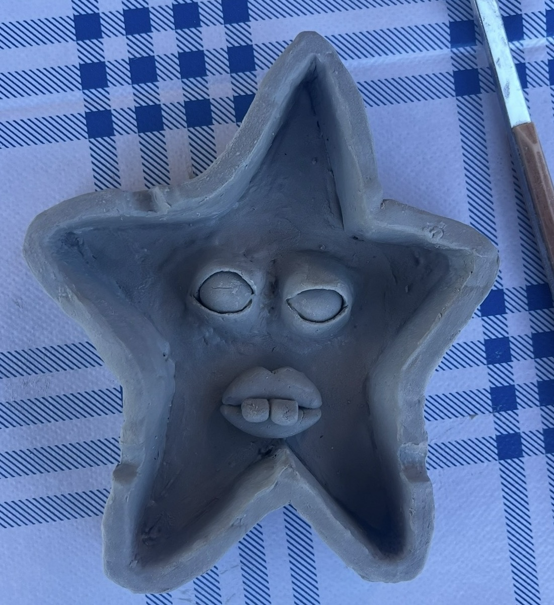
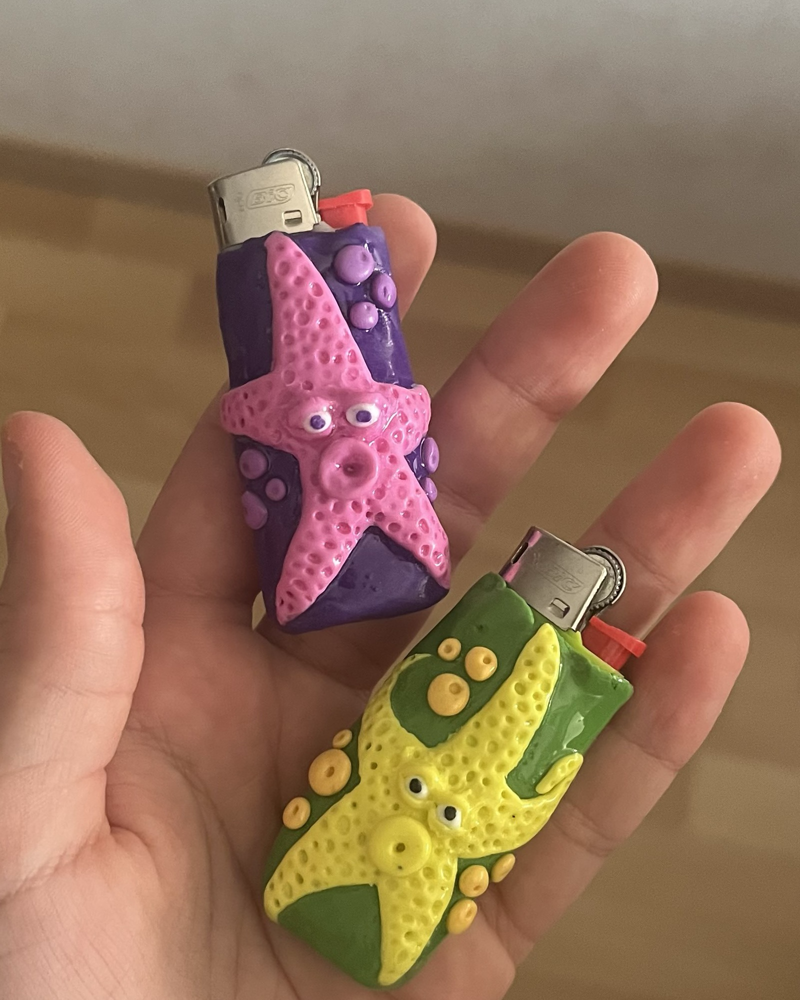
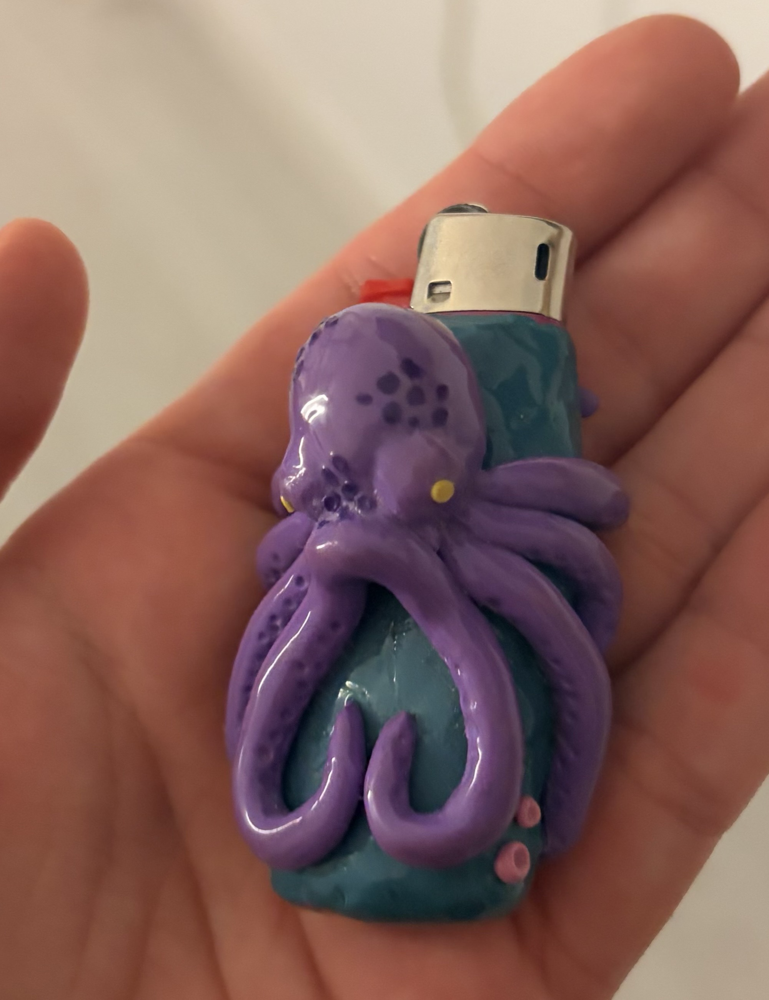
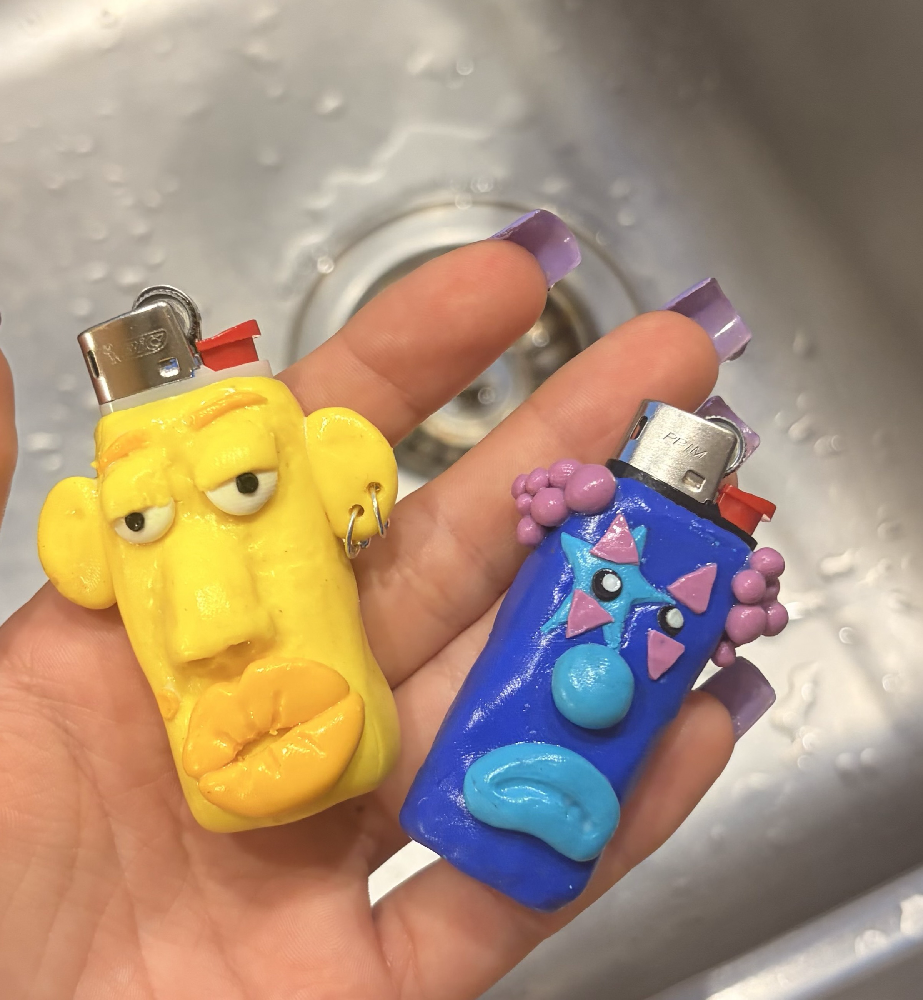
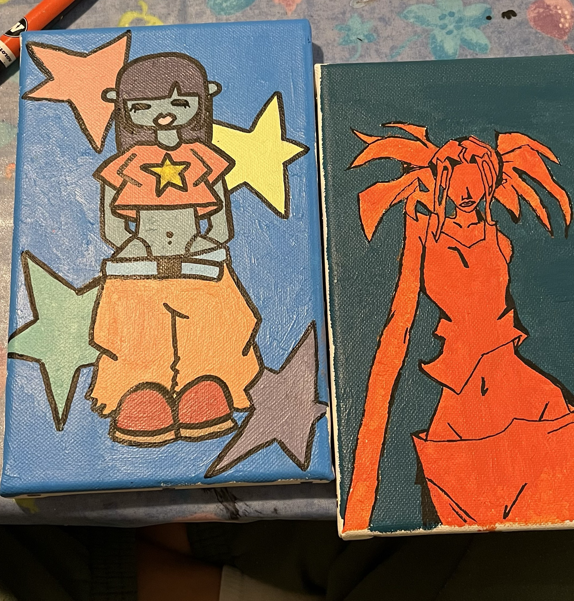
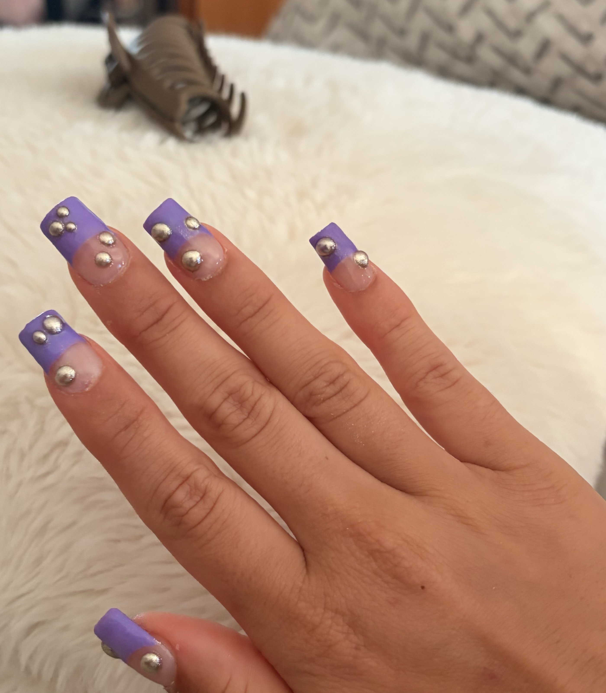
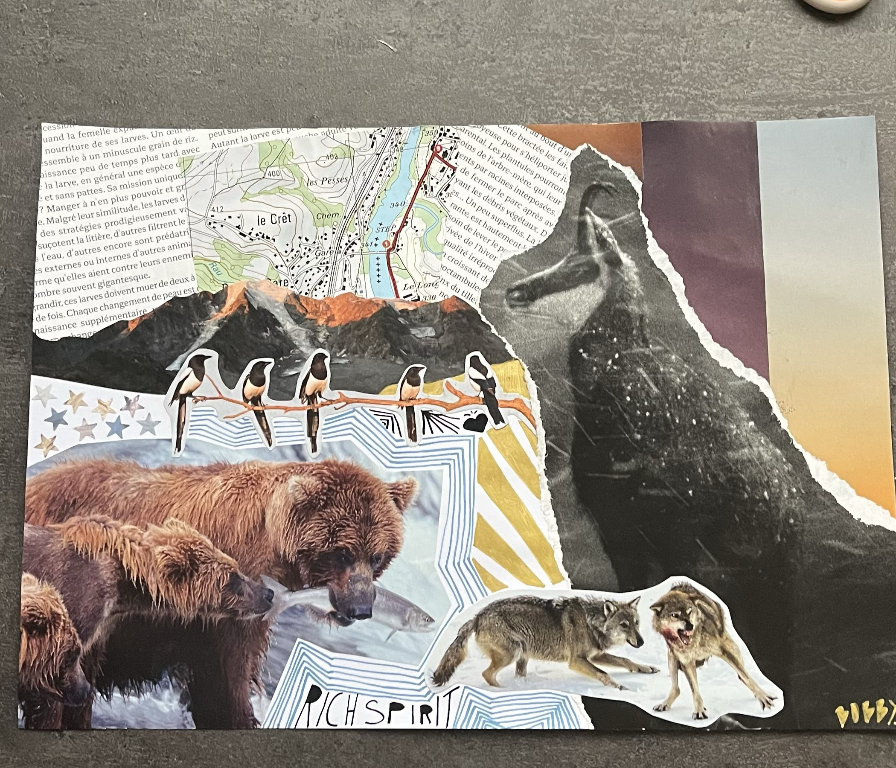
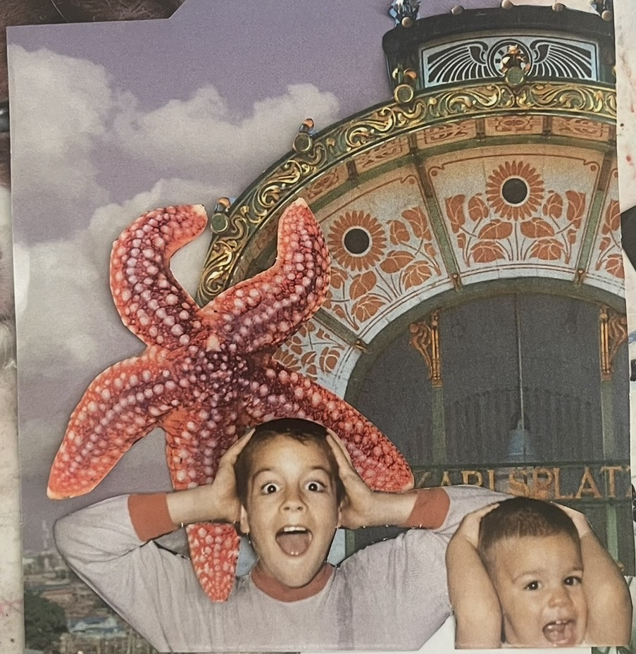
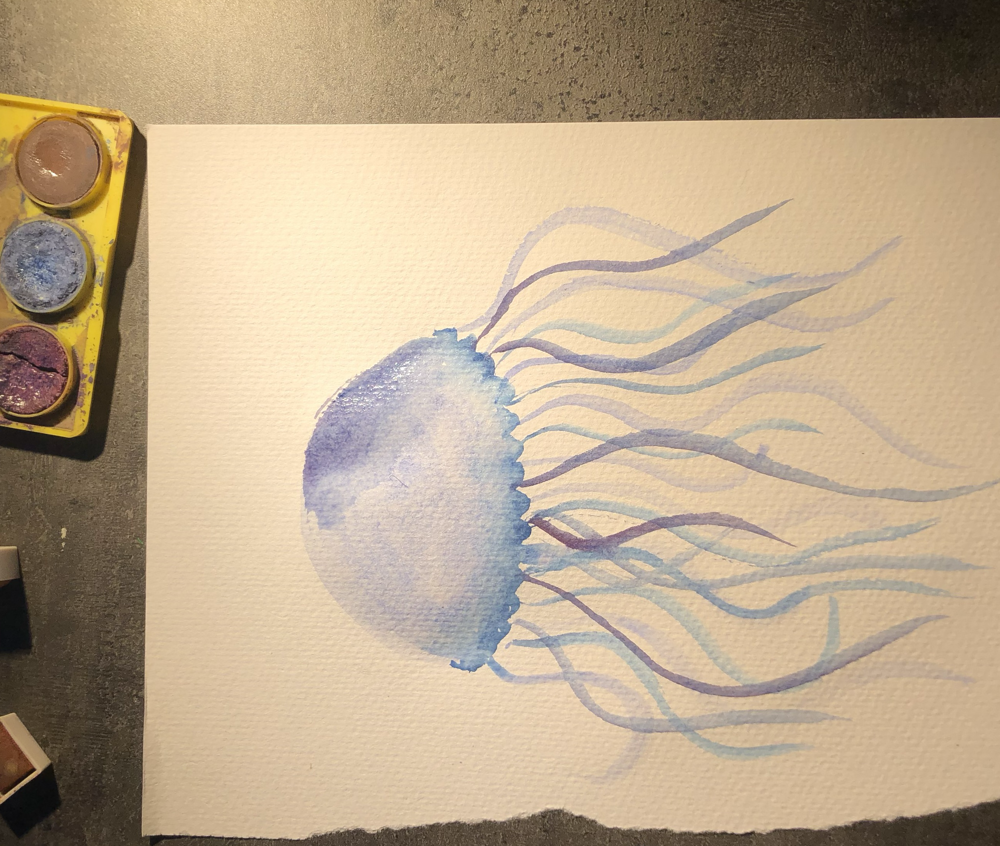

Les mains toujours occupées
« Pourquoi te définis-tu comme quelqu’un de créatif ? » Parce que j’ai toujours baigné dans cet univers. J’ai constamment besoin de créer, que ce soit en laissant libre cours à mon imagination ou en donnant vie à mes idées avec mes mains. Associée à ma curiosité, cette créativité m’a poussée à explorer une multitude d’activités manuelles.
La liste serait bien trop longue pour toutes les citer, mais le confinement a été une période particulièrement propice à cette exploration. J’y ai appris la couture, la broderie et l’aquarelle. Depuis, ma curiosité ne cesse de grandir et je continue à expérimenter de nouvelles pratiques. Dernièrement, je me suis notamment essayée au scrapbooking, au nail art, à la sculpture sur argile, à la pâte polymère et à bien d’autres activités. J’aime découvrir, tester, apprendre et surtout, ne jamais cesser de créer.
✦ Clique sur un cadre pour le retourner

« Superbe cendrier étoile en argile »

« Duo de briquets étoile réalisé à la pâte à modeler auto-durcissante »

« Encore un briquet, mais cette fois-ci une pieuvre »

« J’adore vraiment faire des briquets »

« Ne me demandez pas pourquoi elle a la peau grise… »

« J’adore faire du nail art, ça m’apprend la patience, une qualité que je n’ai pas vraiment »

« Mes abonnements magazines ont bien été rentabilisés »

« Collage, collage, collage »

« Aquarelle exceptionnelle »